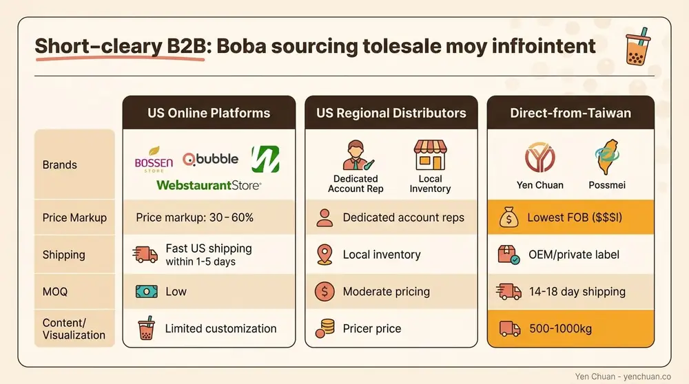
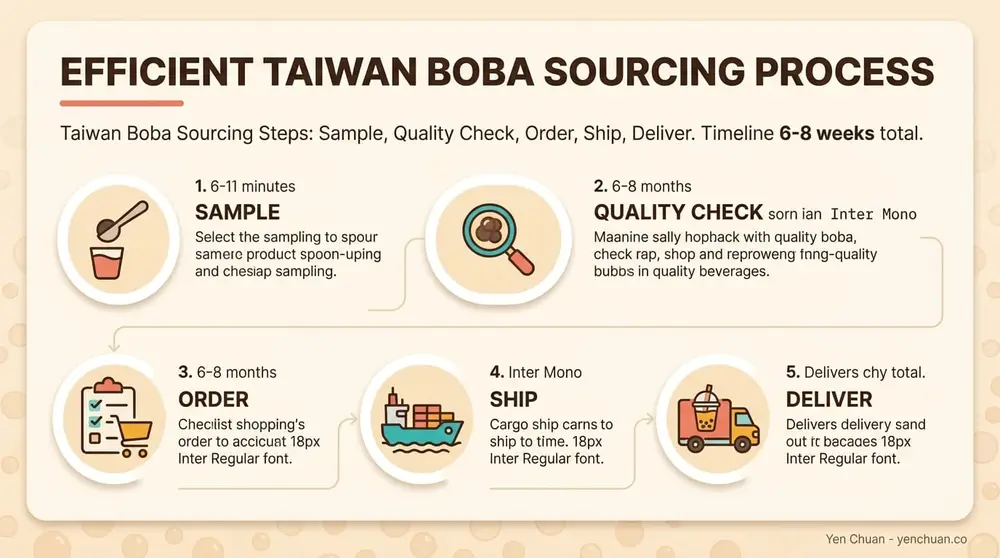

Articles / Business & sourcing
Where to Buy Wholesale Boba: Supplier Comparison
2026-03-20 · Sourcing, Business

Running a profitable boba shop means nailing your supply chain. Whether you're opening your first location or scaling to multiple stores, knowing where to source wholesale boba separates thriving businesses from struggling ones. This guide breaks down your real options—from convenient US platforms to cost-saving direct-from-Taiwan imports.
Understanding Your Wholesale Boba Options
You have three core sourcing channels: US-based online platforms, domestic distributors, and direct suppliers in Taiwan. Each model offers trade-offs between convenience, cost, and minimum order quantities. Most successful boba businesses use a hybrid approach—stocking staples from US suppliers while importing specialty items directly from Taiwan.

The right choice depends on your shop's volume, capital, and sourcing sophistication. A single-location startup might start with US platforms for convenience. A multi-shop operator or established business should seriously evaluate Taiwan sourcing to cut costs by 30–60%.
US-Based Online Wholesale Platforms
These platforms offer next-business-day to 3-day shipping, pre-vetted suppliers, and flat pricing. No payment disputes, no freight logistics headaches—just place an order and receive inventory.
BossenStore
BossenStore stocks tapioca pearls, popping boba, powders, syrups, and tea leaves with transparent pricing. Their strength: consistent stock, straightforward bulk discounts, and no MOQ hidden fees. Most boba shops order every 2–3 weeks from BossenStore because the convenience justifies the slightly higher per-unit cost. Shipping to most US addresses takes 3–5 business days.
Bubble Tea Supply & Qbubble
Both platforms cater to boba retailers with curated product catalogs. Bubble Tea Supply emphasizes turnkey solutions—pre-mixed syrups, ready-to-cook tapioca, and matching supplies. Qbubble competes on breadth: over 500 SKUs across powders, toppings, and equipment. Both charge premium markups (typically 40–50% above FOB cost) but eliminate MOQ friction.
Fanale Drinks & BBLY
Fanale Drinks functions as a broad foodservice distributor with strong boba inventory and local delivery in select regions (California, Arizona, Texas). BBLY (formerly known as larger regional networks) bridges wholesale and retail—they'll ship smaller orders if you're willing to accept slightly higher per-unit pricing.
WebstaurantStore & LollicupStore
WebstaurantStore carries boba supplies alongside general foodservice equipment. Their advantage: one-stop-shop convenience for shops also buying cups, lids, and serving equipment. LollicupStore is equipment-first but stocks core boba ingredients and offers package deals (boba + cups + straws bundled).
Typical markups on US platforms: 30–60% above Taiwan FOB prices. A kg of brown sugar tapioca that costs $3–4 FOB from Taiwan typically retails for $5.50–$6.50 on US platforms.
Domestic Distributors with Regional Reach
Some regional and national foodservice distributors now carry boba lines. These aren't specialty platforms—they're traditional distributors adding bubble tea to their portfolios.
Sysco and US Foods, the two largest US foodservice distributors, have added limited boba inventory in select markets. Their advantage: if you already have an account with them for other foodservice supplies, you can consolidate orders. Their disadvantage: inconsistent regional availability and pricing that doesn't compete with specialty boba suppliers.
Most regional Asian foodservice distributors (depending on your location) stock basics like tapioca, taro powder, and brown sugar. Call local distributors first—they often have existing relationships and may offer better payment terms than online platforms.
Taiwan Direct Suppliers: The Cost-Saving Option
Importing directly from Taiwan is the path to 30–60% cost savings, but it requires higher minimum order quantities (typically 500–1000 kg per SKU) and 14–18 days of ocean freight. For shops ordering $3,000+ per month, direct sourcing pays for itself in weeks.

Yen Chuan
Yen Chuan supplies premium powders, syrups, tapioca pearls, and tea leaves to thousands of shops worldwide. With over 20 years in Taiwan's bubble tea supply chain, Yen Chuan combines competitive FOB pricing with private-label and OEM customization. Their R&D lab develops custom flavor profiles for larger accounts. MOQ starts at 500 kg for standard products, lower for private-label orders (discuss directly with the team). Shipping worldwide from Taiwan takes 14–18 days via ocean freight.
Possmei
Possmei is one of Taiwan's largest boba ingredient manufacturers. They specialize in pearls, popping boba, and powder formulations. Strong for volume orders (1000+ kg). Their certification suite (HACCP, ISO 22000, SGS-tested) appeals to retailers targeting premium positioning. Lead times: standard stock ships within 5 days; custom formulations require 3–4 weeks R&D.
Fokus Inc & Sunnysyrup
Fokus Inc focuses on powders and syrups with broad flavor variety. Sunnysyrup emphasizes natural ingredients and trending flavors (matcha, tiger, brown sugar). Both operate smaller minimum order quantities than Possmei (500–750 kg) and offer shorter lead times. Sunnysyrup's strength is responsiveness—they'll fast-track orders if you communicate 2 weeks in advance.
Green River Taiwan
Green River supplies premium tea leaves and botanical-based powders. If your shop sources tea directly (rather than pre-mixed powders), Green River offers competitive pricing on high-quality Oolong, black, and green tea. MOQ: 100 kg per variety.
Certifications That Matter
Taiwan suppliers serious about export carry HACCP (Hazard Analysis and Critical Control Points), ISO 22000 (food safety), HALAL, and SGS testing. These certifications reassure your customers and demonstrate your supply chain rigor. Ask suppliers for certificate copies—legitimate manufacturers provide them without friction.
Alibaba.com for Bulk Sourcing
Alibaba.com connects retailers to factories directly, but requires caution. Minimum orders are extremely high (often 2000–5000 kg), and you're buying without established brand reputation buffers. Quality control is riskier—suppliers vary wildly in consistency and food safety. Use Alibaba only if you're ordering massive volumes (10,000+ kg annually) or can visit suppliers in person.
Verified supplier badges and detailed customer reviews help, but Alibaba is best for large players or groups of shops pooling orders.
Comparing the Economics: When Direct Sourcing Makes Sense
Scenario 1: Single shop, $2,000/month ingredient spend
- US platform option: $24,000 annually; fast restocking; minimal working capital tied up.
- Direct Taiwan option: $15,000–$16,000 annually (35% savings) but requires $2,000+ upfront per shipment and 14-day lead times.
- Verdict: US platform wins for simplicity; direct sourcing wins long-term if you can absorb lead times.
Scenario 2: Three-location chain, $6,500/month ingredient spend
- US platform option: $78,000 annually; convenience across locations.
- Direct Taiwan option: $45,000–$50,000 annually (35–40% savings); ship every 4–6 weeks; consolidate bulk across locations.
- Verdict: Direct Taiwan pays for dedicated sourcing time; equivalent to hiring a half-time supply manager.
Scenario 3: Emerging brand scaling to 10+ locations, $25,000/month ingredient spend
- US platform option: $300,000 annually; inconsistent pricing/availability strain margins.
- Direct Taiwan with private labeling: $180,000–$210,000 annually; build your own branded product line; OEM capabilities.
- Verdict: Direct Taiwan essential; differentiation and margin protection demand it.
Private-Label and OEM Customization
If you're building a boba brand or multi-shop empire, private labeling and OEM manufacturing unlock higher margins and differentiation.
Taiwan suppliers like Yen Chuan operate in-house R&D labs where you can develop custom flavors, adjust sweetness profiles, and create proprietary formulations. Minimum orders for custom products range from 500–1000 kg, and lead times extend to 4–6 weeks. The payoff: a unique product your competitors can't replicate, plus 20–30% margin improvement over standard products.
Get in touch with our team to discuss custom formulation—we've guided hundreds of retailers through flavor development and scaled production.
Shipping, Logistics, and Hidden Costs
Ocean freight from Taiwan to US: - Timeline: 14–18 days. - Cost: $800–$1,500 per 20-foot container (typical for 8000–12,000 kg shipments). Per-kg cost drops sharply at this volume. - Incoterms: Most suppliers quote FOB (Free on Board) Taiwan. You pay freight. Some offer CIF (Cost, Insurance, and Freight) at a markup.
Don't overlook: - Customs and import duties: Factor 2–3% on food products. - Warehousing/inventory carrying costs: Capital tied up for 4–6 weeks between orders. - Quality checks upon arrival: Budget time and possibly lab testing for first shipments.
Direct import math: A $10,000 FOB shipment + $1,200 freight + $300 customs = $11,500 landed cost. If that volume normally costs $16,000–$18,000 through US platforms, you've saved $4,500–$6,500 in this single shipment.
Evaluating Supplier Quality and Reliability
Request samples before committing. Legitimate suppliers ship samples (small quantities) quickly—often within 5–7 days. Test flavor, shelf stability, and color consistency. Poor samples are a yellow flag.
Ask for references. Suppliers who've been in business 5+ years will connect you with existing retail customers. Call them and ask about lead times, consistency, communication, and response to quality issues.
Verify certifications independently. Ask for HACCP and ISO documentation. SGS is a third-party testing lab—verify that a supplier's SGS certificate actually covers the products you're buying.
Establish a trial order protocol. Don't jump from samples to a 1000 kg commitment. Order 200–300 kg first, test in your shop, measure customer feedback, and only scale if you're satisfied.
Communication and language. Many Taiwan suppliers have English-speaking export teams. Use email for order details and contracts. Phone calls help build relationships but email creates paper trails for disputes.
Hybrid Sourcing Strategy: The Practical Approach
Most successful boba businesses don't rely on a single supplier. A balanced approach looks like this:
- Core staples from US platforms: Tapioca pearls, brown sugar, basic taro and matcha powders. Frequent orders (every 2–3 weeks); 20–30% cost premium justified by predictability and fast shipping.
- Volume products direct from Taiwan: Brown sugar syrup, fruit syrups, custom powders. Quarterly orders; 35–40% cost savings offset by lead time and MOQ.
- Specialty items from smaller importers or direct suppliers: Rare tea leaves, trending flavors, private-label products. As-needed, often through direct Taiwan contact.
This hybrid model reduces supply chain risk (no single supplier outage kills your business) while maximizing cost efficiency.
Getting Started With Taiwan Direct Sourcing
-
Identify your volume requirements. Audit 3 months of ingredient spend. Aim for 500+ kg monthly combined volume to make direct sourcing economical.
-
Research 2–3 suppliers. Request samples and speak with their existing customers. Yen Chuan, Possmei, and Fokus Inc are solid starting points—all have export experience and English-speaking teams.
-
Negotiate terms. Discuss MOQ, pricing, lead times, and payment terms (often 50% deposit, 50% before shipment). Ask about their responsiveness to quality issues.
-
Plan your first order. Start smaller than you think you need. A 500 kg first order tests the relationship and gives you time to assess fit before scaling.
-
Build your logistics workflow. Arrange a freight forwarder (many suppliers recommend partners) or use integrated shipping services. Track your first container to learn lead times and coordinate warehouse capacity.
Looking for premium custom formulations for your boba business? Browse our ingredient selection or get in touch with our team to discuss your sourcing needs—we ship worldwide from Taiwan.
About Yen Chuan
Yen Chuan has been at the heart of Taiwan's bubble tea industry for over 20 years, supplying premium powders, syrups, tapioca pearls, and tea leaves to thousands of boba shops worldwide. With an in-house R&D lab and a commitment to quality ingredients, Yen Chuan is more than a supplier—we're your partner in the boba business. As a direct Taiwan manufacturer, we've guided hundreds of retailers through wholesale sourcing decisions and custom product development, making us uniquely positioned to help your business navigate supply chains and build lasting competitive advantage.
FAQ
Where can I buy wholesale boba in the United States?
US-based platforms like BossenStore, Bubble Tea Supply, Qbubble, Fanale Drinks, and WebstaurantStore stock wholesale boba ingredients with next-day to 3-day shipping. These platforms charge 30–60% markups over Taiwan FOB prices but offer convenience, no minimum order quantity friction, and straightforward pricing. Regional foodservice distributors and some Sysco/US Foods locations also carry limited boba inventory. For startup boba shops needing quick initial stock, US platforms are the fastest option.
How much does wholesale boba cost compared to retail?
Wholesale boba costs 30–60% less than retail, depending on sourcing channel. Direct-from-Taiwan suppliers (FOB cost) typically charge $3–4/kg for brown sugar tapioca; US platforms mark this up to $5.50–$6.50/kg. A shop spending $2,000/month through US platforms pays $24,000 annually; the same volume sourced directly from Taiwan costs $15,000–$16,000, saving $8,000–$9,000 yearly. Savings multiply across multiple shop locations.
What are the minimum order quantities for wholesale boba?
US online platforms have no formal MOQs—you can order as little as 5 kg. Direct Taiwan suppliers typically require 500–1000 kg per SKU for standard products, lower for private-label orders. Alibaba suppliers often demand 2000–5000 kg. Higher MOQs reflect manufacturing efficiency; bulk orders unlock lower unit costs that offset the upfront capital and storage requirements.
How long does it take to ship boba from Taiwan to the United States?
Ocean freight from Taiwan to US ports typically takes 14–18 days. This timeline includes factory preparation (2–3 days), port processing, and ocean transit. Customs clearance adds 1–3 additional days. Total landed time is usually 18–21 days from order confirmation. Some suppliers offer expedited shipping via air freight (4–7 days) at 3–5x higher cost, suitable only for urgent orders or small quantities.
Can I order custom or private-label boba directly from Taiwan suppliers?
Yes. Taiwan suppliers like Yen Chuan operate in-house R&D labs and offer OEM (original equipment manufacturer) and private-label services. You can develop custom flavors, adjust sweetness and color, and create proprietary formulations. Minimum orders for custom products typically range from 500–1000 kg, with 4–6 week lead times for development and production. Custom products allow boba brands to differentiate and improve margins by 20–30% over standard offerings.
Authority Sources
-
Global Industry Analysts Inc. "Bubble Tea Market Report 2025." Industry market analysis on global boba demand and supply chain trends.
-
Taiwan External Trade Development Council. "Export Guidelines for Beverage Ingredients from Taiwan." Government export resource on compliance, certifications, and shipping protocols.
-
International Organization for Standardization. "ISO 22000:2018 – Food Safety Management Systems." Food safety standard adopted by major Taiwan beverage suppliers.
-
HACCP Alliance. "Hazard Analysis and Critical Control Points Certification." Food safety certification resource standard in Taiwan beverage manufacturing.
-
US Food and Drug Administration. "Importing Food Products into the United States." Customs and import guidelines for food ingredient shipments.